Chapter 5 Scientific Research Questions and Null Hypothesis Significance Testing Framework
5.1 Introduction
In the prior chapter, we discussed how statistics is an art of making probablistic guesses about the nature of phenomena that we observe. At its heart, inferential statistics techniques make an assumption that a signal does not exist and then ask how probable this assumption is once we observe some sample data.
Before diving into learning these statistics techniques, it will be important that we discuss the null hypothesis significance testing (NHST) framework. While null hypothesis significance testing is not the only way to approach inferential statistics, it is the dominant framework and it is important that you understand how it operates. The NHST framework is not without criticism, including publicly by myself. A big part of this chapter is to introduce null hypothesis testing to you as a necessity, but also to make clear that you should not be basing the quality nor validity of your quantitative research on \(p\)-values alone.
To approach this, in this chapter we will discuss some of the historical developments that have lead to NHST - specifically the works of Ronald Fisher versus that of Jerzy Neyman and Egon Pearson. Modern NHST is a sort of an amalgamation of the works of these two teams and, unfortunately, it is often applied in ways that have resulted in studies of poor scientific quality. You will not need to know the history of statistics in order be a successful applied statistician, BUT, understanding the principles of Fisher’s approach versus Neyman-Pearson’s will provide you context into what NHST is and what some of its flaws are.
5.2 “Significance”
Many of you (all of you?) are likely to recognize the importance of the word “significance.” Significance takes on a sacred quality - many of us have been taught to think of the term “significant” as indicating that your study has found something truly important worth sharing! Results that do not meet this standard are then considered inconsequential and thrown out, never to be looked at again.
I really want to challenge you to not care too much about this word. As we will discuss, a result being “significant” does not inherently mean that it is meaningful, useful, or insightful. By the same token, a result being “not significant” does not mean the result is not meaningful, useful, or insightful. Part of the goal in this chapter is to understand what “significance” means and how to think about it in your own studies.
5.3 An Important Distinction: Scientific Versus Statistical Hypotheses
Prior to discussing the null hypothesis framework, I first want to draw the distinction between scientific research questions and hypotheses and statistical hypotheses. While inter-related, we must understand the distinction, else we fail to adequately answer our primary research goals when employing statistical techniques.
5.3.1 Scientific Research Questions & Scientific Hypotheses
When we undertake a research study, we generally have a research question we are hoping to answer. The purpose of a scientific study is to answer your research question as best as possible. Research questions are presented in plain language, often at the end of the Introduction section of a manuscript. It is common to read a statement in research paper that reads something like:
The primary objective of this research study is to address the following research question: among people who smoke cigarettes, is income level associated with likelihood of quitting cigarette use?
Often times, a research question is followed by a hypothesis statement. To continue this example, the next sentence may read:
We hypothesize that higher income levels will be associated with an elevated likelihood of reporting quitting cigarette use at 6-month follow-up.
Assuming we are undertaking a quantitative study, we then take the data available to us and use statistical methods in an effort to best answer our research question. In this case, we need to identify a set of statistical methods that can be applied to answer our research question.
The important thing in a research study is to answer our scientific research question and the results of our statistical tests must be understood as being in service to the mission to answer this question.
5.3.2 Statistical Hypotheses: The Null and the Alternate
We choose our statistical methods in order to answer our scientific research question. However, each inferential statistical method has its own set of hypotheses. The hypotheses that correspond to a statistical method always follow the same form, regardless of the scientific research question being asked. Further, making a decision about your statistical hypotheses is not the same as making a decision about your scientific hypotheses.
Within the NHST framework, an inferential statistical method has one inherent hypothesis (the null) and a second that can also be specified (the alternate). We will discuss the purpose and origins of these hypotheses later on in the chapter:
- \(H_0\): The null hypothesis, which states that any signal observed within a sample is the result of random chance (i.e., the signal does not exist at the population-level)
- \(H_A\): The alternate hypothesis, which states that the observed signal is not the result of random chance and that the signal does exist at the population-level. Within the NHST framework, this is often presented as the negation of the null hypothesis.
Remember, when we take a random sample of a population, there is going to be variance (or noise) within the data. Much of the variation in our sample is simply the result of random chance - it wouldn’t be weird to see variations in our sample data from what we may expect.
For example, let’s say we are running a study where we want to answer the scientific research question: “Are people who smoke cigarettes more likely to experience depression than those who do not smoke cigarettes?” We hypothesize that, “Yes, people who smoke cigarettes are more likely to experience depression.” In our study, we have measured CES-D scores, an index measuring severity of depressive symptomology, ranging from 0 - 60. So, we decide to compare CES-D depression scores of people who smoke cigarettes versus people who do not smoke cigarettes in an effort to address our scientific research question. A \(t\)-test is a statistical tool that can be used to compare the mean value (in this case, average CES-D score) of two groups – so that seems like a good place to start. The null hypothesis of a \(t\)-test is that the two groups have the same mean score. So if \(\mu_S\) is the average score of smokers and \(\mu_{NS}\) is the average score of non-smokers, then we can understand that our null hypothesis is:
\[H_0: \mu_S = \mu_{NS}\] Let’s immediately note that this null hypothesis doesn’t correspond with our scientific hypothesis at all. In fact, we hypothesized that people who smoke would be more likely to experience depression but this hypothesis actually assumes that smokers and non-smokers have the same CES-D score. We can immediately see that we are going to have to translate the results of our statistical test in order to try to answer our scientific research question.
Now, let’s say we recruit 100 smokers and 100 non-smokers and we find that the average score of smokers is 14.2 and the average score of non-smokers is 14.1. Those do not equal each other! Is our null hypothesis wrong? Well, we don’t really have enough information. You see, there are millions of people who smoke and even more who don’t smoke…if we assume that for these populations that the null hypothesis is true, then finding a small difference in CES-D scores among a relatively small sample is not strange at all! This is what we mean by “observed by random chance” - if we actually have a true random sample, then there is going to be some natural variation in our sample.
Now, what if we recruited a different set of 100 smokers and 100 non-smokers and we found that smokers had a CES-D score of 22 and non-smokers had a CES-D score of 12. Well, as we have noted, it is not weird that values are different. That doesn’t inherently mean that our null hypothesis is false BUT it is much stronger evidence that the null hypothesis may be false than the prior sample.
Basically, each statistical method is trying to assess how improbable the null hypothesis is based on the data we have observed. If the difference in average CES-D scores is only 0.1, then the null hypothesis seems probable. If the difference is 5 or 10 or 20, then the null hypothesis seems less and less probable. The methods we use in null hypothesis testing are based around falsifying the null - we assume that it is true, observe data, and then ask how probable our data is assuming that the null is true.
So, we could run our \(t\)-test and decide that we think that the null hypothesis is improbable, or that our result was significant. This indicates to us that our alternate hypothesis has merit:
\[H_A: \mu_S \neq \mu_{NS}\]
Does this answer our scientific research question? We have shown that it is highly probable that the mean CES-D score of smokers does not equal the mean score of non-smokers. But, our research question was about “likelihood of experiencing depression.” Have we fully captured this idea? Or have we only captured one aspect? Can depression be so easily reduced to a single scale? Can it so readily be captured with one cross-sectional measurement? We might want more information before we answer our research question.
5.3.3 Answering Our Scientific Research Question with Our Statistical Results
Often, when we write a quantitative research report, we string together multiple statistical tests, each with their own set of statistical hypotheses. We take the results of this set of statistical tests and we, as the authors, make an argument about how they answer our scientific research questions and reflect on the plausability of our initial scientific hypotheses.
This was a rather long-winded way of saying that if you run a statistical test and find a “significant” result, your job as a researcher is not over. You must always seek to answer your primary research question and “significance” alone is not enough to do so.
5.4 A Look At History To Understand NHST
Okay! Now that that is out of the way, we need to actually discuss the purpose of the null and alternate hypotheses and how we go about evaluating them. NHST is actually a weird mixture of the methods for statistical inference developed by Ronald Fisher and that developed by Jerzy Neyman and Egon Pearson. In fact, their approaches are not compatible and which approach is better has been a topic of debate for nearly a century now! Unfortunately, hypothesis testing is often taught as a series of steps and little time is spent reflecting on what NHST is and what its flaws are.
In the following sections, we will discuss the system of statistical inference developed by Fisher and that by Neyman-Pearson. This will help us understand what NHST is and how to use it effectively. Unfortunately, as a social science researcher, you will often be expected to approach science in the “normal” and “customary” ways. For decades, NHST has been misapplied to the point that the “normal” use of NHST is quite often not scientifically rigorous. This has been argued to have resulted in the “replication crisis” in the social sciences.
So, first we will discuss the system developed by Fisher, which focuses solely on falsification of the null hypothesis. Then we will discuss the system developed by Neyman-Pearson, which focuses on choosing between a main and alternate hypothesis. Finally, we will discuss how NHST has attempted to marry these two approaches and how this has resulted in a mishmash of ideas that are often misunderstood and misapplied. In a sense, we must know how to navigate NHST so that we can engage with and author quantitative research, but, I want to encourage you to be critical of these practices.
5.5 Falsifying the Null Hypothesis: Say Hello to the P-Value!
Ronald Fisher (1890 - 1962) was a statistician who formally developed the modern idea of falsifying the null hypothesis. While his biography is not needed to understand the concepts, I do want to point out that Fisher (along with other statistical forefathers like Francis Galton and Karl Pearson) was a eugenecist who felt that statistics provided a powerful set of tools for studying racial differences.
Fisher and other statisticians were faced with a challenging philosophical question: how do you prove that something is true? Well, it turned out that proving something is true, especially about human behavior, is basically impossible. There are too many people and too many sources of variability to ever really establish that some “fact” is true about large populations of people (nor is it clear that all people are ruled by some unifying set of constructs that explain humanness).
Fisher’s approach was an elegant response to this conundrum. Instead of trying to prove something is true or false, we can actually assume that something is true and then make observations about the world through this assumption. Does what we are observing make sense with our assumption - or, how likely are our observations given our assumption?
This is where the idea of the null hypothesis was born. If we want to try to show that some signal exists, Fisher’s method suggests that we assume that (\(H_0\)) a signal does not exist. Then we observe data and measure that signal within the data to get a test statistic \(x\). Finally, we calculate how probable it is that we observed a test statistic whose magnitude was at least \(x\) assuming the null hypothesis is true. In other words, we calculate the conditional probability:
\[P(signal \geq x|H_0)\] In other words, what is the probability of observing the signal (or a stronger signal) within our sample data, assuming that the null hypothesis is true that no signal exists. Since the null hypothesis is that no signal exists, we can see that \(P(signal\geq x|H_0)\) is a way of assessing how likely the signal within our data is given this assumption (or, how likely the signal we observed is simply the result of random noise). If this value approaches 0, we are suggesting that there is a very low probability we could observe this signal in the sample if the null hypothesis were true. The closer to 0 this value becomes, the more confident we can feel that our assumption of \(H_0\) is wrong. In otherwords, the closer to 0 this value becomes, the more confident we can feel that a signal actually exists at the population level.
We call this value the p-value. The p-value represents the probability of observing a signal of a given strength or stronger, assuming that (\(H_0\)) no signal actually exists. If the p-value is quite small, then that indicates to us that our assumption is probably wrong and that it is quite likely that a signal exists. Notice, this doesn’t prove that \(H_0\) is false, it is just a way of reflecting that it is highly improbable. The term significant is then applied to p-values with values less than some pre-established threshold \(\alpha\). \(\alpha\) is typically set to 0.05 in most research practices. Fisher importantly argued that “no isolated experiment, however significant in itself, can suffice for the experimental demonstration of any natural phenomenon.” In other words, study with significant findings should be viewed as sufficient alone to determine what is factual.
5.5.1 A P-Value is Not…
Cyril Pernet put together a nice list of things that a p-value is not:
- A p-value is not a measure of the strength or magnitude of a signal (i.e., a small p-value does not mean the signal is strong or meaningful)
- A p-value does not reflect the probability of replicating the signal observed (i.e., getting a small p-value doesn’t mean replication studies are likely to get the same result)
- A small p-value is not evidence of any alternate hypothesis, it is only a reflection of the relationship between the data and the null
- The p-value is not the probability that the null hypothesis is true
5.5.2 So, How Do We Calculate the P-Value?
The crux of this approach is that we need a formula by which we can actually calculate the p-value. The method by which we calculate a p-value is by comparing a test statistic to a corresponding theoretical distribution (which we discussed in the previous chapter!). Generally, a test statistic is a single number which is intended to capture the strength of the signal within the sample data. This test statistic can then be compared to its corresponding distribution in order to calculate the p-value.
The theoretical distribution of a test statistic is dependent on how the test statistic is calculated, including the distributions of the data used to calculate it. Throughout this text, when we learn a new method, we will reflect on what the test statistic is and what the corresponding distribution is. Regardless, though, calculating the p-value always follows the same general steps. Let us use an example to show the logic of how p-values are calculated.
5.5.3 A P-Value Primer: Big Babies
So, we are researching the birth weight of newborn babies in a small town. We had heard some rumors that babies born in this town are all really big! Doctors joke there must be something in the water. So, we want to know, are the babies born in this town actually bigger than normal babies. We happen to know that the weight of newborn babies is normally distributed, that the average weight of a newborn baby is \(\mu = 7.5\) pounds, and that the standard deviation of birth weights is \(\sigma = 1.2\) pounds.
We start by setting our null hypothesis. Since the null is the assumption that no signal exists, the null would be that birth weights of babies in this small town are the same as babies generally. If we let \(\mu_{ST}\) be the weight of newborn babies in this small town, then our null hypothesis would be:
\[H_0: \mu_{ST} = \mu\]
This is actually the same, mathematically, as saying that:
\[H_0: \mu_{ST} - \mu = 0\]
This is quite useful because the difference between the average baby weight in the small town and the average baby weight generally represents our signal. So, let’s say we got birth records from a sample of babies in this small town and we calculated that the average birth weight of the sample of babies is \(\bar{x}\). If we assume that \(H_0\) is true, then it makes sense that the value of \(\bar{x} - \mu\) would be normally distributed around the value 0. This is because if we take a random sample of babies from this small town and calculate their average weight \(\bar{x}\) it is quite probable that \(\bar{x} \neq \mu\) because there is always going to be random noise in the data, even if we are assuming that \(\mu_{ST} = \mu\). However, if \(H_0\) is actually true, then we can understand that values of \(\bar{x} - \mu\) close to 0 are more probable than values further from 0. Further, it seems likely that if \(H_0\) were true, that \(\bar{x}\) has the same probability of being less than \(\mu\) as being greater than \(\mu\). In other words, it appears that if \(H_0\) is true, that \(\bar{x} - \mu\) is normally distributed around 0!
In the prior chapter, we discussed the \(z\)-distribution (or the standard normal distribution). Further, we talked about how any normal distribution can be “standardized” by dividing the values by the standard deviation. We can actually transform our value \(\bar{x} - \mu\) so that it corresponds to the \(z\)-distribution. We use the following equation to do so:
\[z = \frac{\bar{x} - \mu}{\frac{\sigma}{\sqrt{n}}}\]
So, now we have this value \(z\). This is our test statistic. \(z\) has several cool properties: 1) it captures the strength of the signal in the dataset and 2) it corresponds to a \(z\)-distribution which captures the behavior of the signal assuming that \(H_0\) were true. Now, all we need to do is calculate \(P(signal >=z | H_0)\).
So, let’s throw some numbers in. We got the weight of \(n = 16\) babies and found that their average weight \(\bar{x} = 8.1\) pounds. So we can calculate \(z\) as follows:
\[z = \frac{8.1 - 7.5}{\frac{1.2}{\sqrt{16}}} = \frac{0.6}{0.3} = 2\] So, now we can map the value \(z = 2\) onto the \(z\)-distribution like so:
x<- seq(-5,5,by=.1)
y<- dnorm(x,mean = 0, sd = 1)
plot(x,y,type="l",ylab="Density")
lines(c(2,2),c(0,1), col = "red")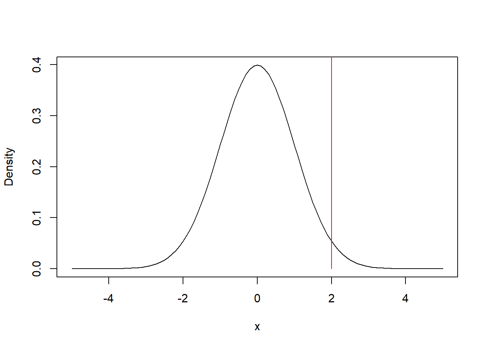
We are almost there! To calculate the p-value, we need to calculate the probability that our test-statistic has a magnitude of 2 or greater. There are two approaches when using a two-tailed distribution. A two-tailed test or a one-tailed test. In a two-tailed test, we simply care about any observation more extreme than our calculated value \(z\). Since \(z = 2\), this means any value greater than or equal to 2 or less than or equal to -2. In a normally distributed variable centerred around 0, 2 and -2 have the same probability of occurring. So, for the two tail test, we fill in the tails starting at -2 and 2:
x <- seq(-5, 5, by = .01)
y <- dnorm(x, mean = 0, sd = 1)
## We will now plot the normally distributed data as a line (type = "l")
plot(x,y, type="l", xlab = "z", ylab = "Density")
## we want all values of x and y where x is greater than 68
## The following three lines of code do this
poly_x <- c(2,x[x>=2])
index_val <- which(x == 2)
poly_y <- c(0,y[index_val:length(y)])
## we need the negative values too
neg_x <- c(x[x<=-2],-2)
neg_index <- which(x == -2)
neg_y <- c(y[1:neg_index],0)
## Then we plot it
polygon(poly_x,poly_y,col = "slateblue1")
polygon(neg_x,neg_y,col = "slateblue1")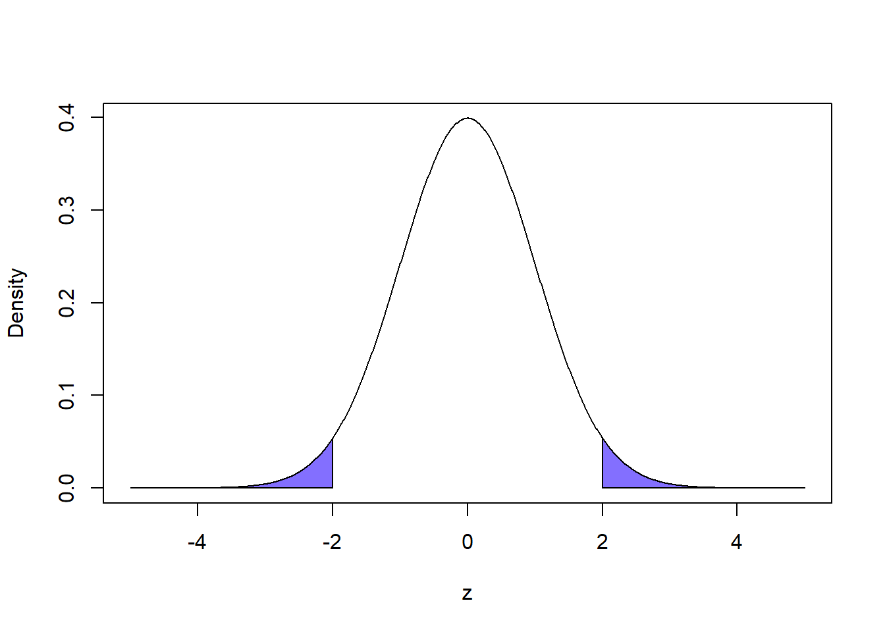
Our p-value is the area of the filled in sections of the curve, which we learned how to calculate last chapter, by using the auc function like so:
round(MESS::auc(poly_x,poly_y) + MESS::auc(neg_x,neg_y),3)## Warning in regularize.values(x, y, ties, missing(ties)): collapsing to unique
## 'x' values
## Warning in regularize.values(x, y, ties, missing(ties)): collapsing to unique
## 'x' values## [1] 0.045We see that we got a p-value of 0.045. If we were using \(\alpha = 0.05\) then we can see that \(0.045 < \alpha\) and we would describe this finding as significanct. In other words, we feel that it is quite improbable that we would observe babies of this average weight if there was no difference between babies in this small town and babies generally.
However, we actually were more interested in whether or not babies in this small town were bigger than babies generally. Thus, values of \(z\) less than 0 are not of interest because they correspond to values of \(\bar{x}\) where the babies in the small town have a lower birthweight. So, we can run a one-tailed test where we only look at the positive end of the distribution. If we plot that it looks like so:
x <- seq(-5, 5, by = .01)
y <- dnorm(x, mean = 0, sd = 1)
## We will now plot the normally distributed data as a line (type = "l")
plot(x,y, type="l", xlab = "z", ylab = "Density")
## we want all values of x and y where x is greater than 68
## The following three lines of code do this
poly_x <- c(2,x[x>=2])
index_val <- which(x == 2)
poly_y <- c(0,y[index_val:length(y)])
## Then we plot it
polygon(poly_x,poly_y,col = "slateblue1")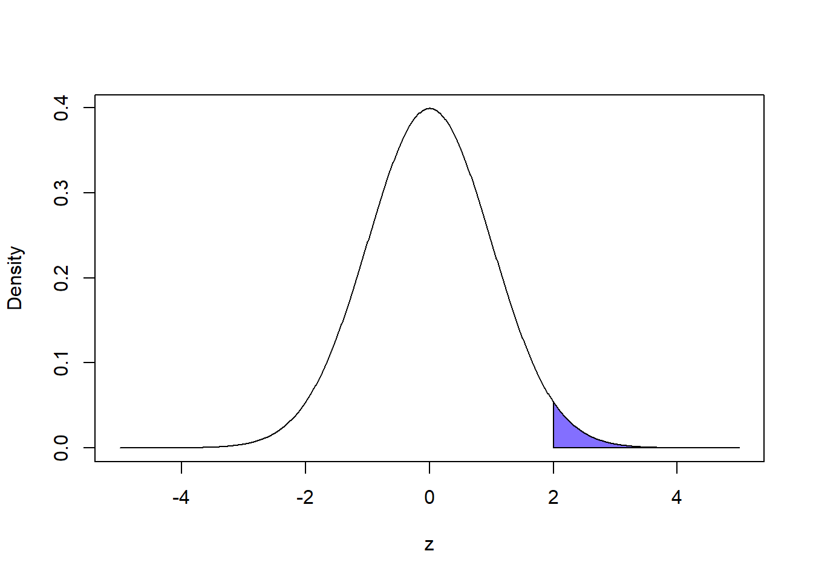
And the p-value can be calculated by the same method, which, since the normal distribution is symmetrical, we would anticipate is half the value of our two-tailed test:
round(MESS::auc(poly_x,poly_y),3)## Warning in regularize.values(x, y, ties, missing(ties)): collapsing to unique
## 'x' values## [1] 0.023And voila! We have done it! We have calculated our p-value. We would read this as saying that, assuming that our null hypothesis was true, there was a 2.3% chance we would have observed a mean baby weight of these 16 babies in this small town of 8.1 pounds or greater. If using an \(\alpha\)-threshold of 0.05, we would describe this finding as significant.
Now, our overall research question was about whether or not babies in this small town are, on average, larger than normal babies. Did we effectively answer that with this test? I would say we have found an important part of answering this question, but that our work is not complete. Yes, this provides evidence that it is probable that babies in this town don’t have the same average birth weight as babies generally - this is evidence of the claims that babies born in this town are larger than average. If this were a real study though, we would need to also argue that our finding is not influenced by sampling or measurement bias! I raise this point just to indicate that a significant finding alone doesn’t answer our research question, it just provides a piece of information we can use to answer our research question.
5.5.4 General Steps to Calculating P-Value
So, the general steps to calculating a p-value are as follows:
- We assume \(H_0\) that no signal exists in the population
- The signal in the sample data is measured and identified
- This signal is converted into a test statistic which corresponds to a specific theoretical distribution
- The test statistic is compared to the distribution (area under the curve) in order to calculate the p-value
Any time a p-value is calculated, these are the steps that are undertaken! Many of the statistical methods we employ were designed specifically because they allow this process to occur…if you are ever learning about a method and you think “why on earth are we doing this?” the answer is likely that this is how we can convert our sample signal into a test statistic that can be compared to a theoretical distribution.
5.6 But, There Must Be an Alternative
Fisher’s approach focuses on falsifying the null hypothesis via significance testing. The null hypothesis is assumed to be true - the goal is not to try to argue that the null hypothesis is actually true or actually false through Fisher’s approach. It is the researchers job to reflect on what the findings mean, how to interpret the results in relation to the over-arching scientific research question. Fisher’s approach takes a (rightfully) cautious approach to scientific discovery - we can’t really know what is true and what is false, but we can get a sense for what is probable! In this way, scientific knowledge can be built up over time by replicating studies and by comparing results across settings and samples. It is then the job of researchers to reflect on these results to make conclusions about the nature of various phenomena.
However, there are many cases where simply reflecting on the probability of the data observed falls short of intended purposes. This is especially true in industry and corporate settings - perhaps a company wants to figure out if one manufacturing approach is better than another or if their new measurement tool is accurately calibrated. In such circumstances, simply ruminating on and reflecting upon the results of a series of tests is not practical. There are certain cases where a decision has to be made based on the information at hand!
Enter two of Fisher’s contemporaries, Jerzy Neyman and Egon Pearson. Neyman and Pearson developed a competing system for statistical inference, which was informed by involvement in manufacturing (i.e., they were interested in using statistics to figure out if a batch of a product on a production line was abnormal). Instead of simply reflecting on the probability of the data, assuming a null hypothesis, the Neyman-Pearson approach involves deciding between the main hypothesis (that no detectable signal exists) and an alternate hypothesis (that a detectable signal exists). Instead of significance testing, we refer to this process as hypothesis testing.
In the Neyman-Pearson approach, two hypotheses are specified:
- \(H_M\): The main hypothesis, that no detectable signal exists
- \(H_A\): The alternate hypothesis, that a detectable signal exists
The goal of the Neyman-Pearson approach is to pick one of these two hypotheses. To make this selection, they use the same significance criterion as Fisher. The \(p\)-value is calculated and if the \(p\)-value is less than \(\alpha\), then the main hypothesis is rejected and the alternative hypothesis is accepted. If the \(p\)-value is greater than \(\alpha\) then the main hypothesis is accepted and the alternative hypothesis is rejected. This is different from Fisher’s approach - while Fisher’s approach advocates for identifying significant results, Fisher was also a proponent that a conclusion about the null hypothesis cannot be made based on the results of a single study.
Choosing between the main and alternate hypothesis introduces a new concern - is the determination correct? If you reject the null, should you have? If you accept the null, should you have? While Fisher (rightfully) treated the p-value as a probability, Neyman-Pearson treat it as a decision rule. Since it is a probability, however, that means that if a decision is made there is a chance that the decision is wrong. The Neyman-Pearson approach has a strong appeal to any person - Fisher’s approach requires cautious (and often ambiguous) interpretation, whereas the Neyman-Pearson approach has the finality of making a clear decision. Unfortunately, applying this logic to individual research studies has resulted in overly-conclusive scientific reporting across the social sciences.
Choosing between the main and the alternate hypothesis also introduces an important concept: effect sizes. If the null hypothesis states that no signal exists and the alternate states that one exists, then the effect size represents the magnitude and the direction (positive or negative) of the signal. However, as we have discussed, in the Fisherian approach, we generally assume that there will be a signal in our sample data - we are just trying to figure out if we think that the observed signal is consistent with the null hypothesis. That means that relatively small observed effect sizes are likely to support the acceptance of the null even if that small effect size is the true value (i.e., the null is false) - not all deviations from the null hypothesis are detectable.
5.6.1 Visualizing the Null and the Alternate, an example
So, to better understand why this notion of detectability is important, let us take our babies example and visualize it. Remember, we had compared the mean weight of babies in this small town (rumored to produce giant babies) versus the mean weight of average babies. We measured the signal by subtracting the mean weight of small town babies by the mean weight of average babies and then we standardized the value to a \(z\) value which is assumed (under the null hypothesis) to be described by the standard normal distribution (\(z\)-distribution). We depict the standard normal distribution below:
x<- seq(-5,5,by=.1)
y<- dnorm(x,mean = 0, sd = 1)
plot(x,y,type="l",ylab="Density", xlab = "z")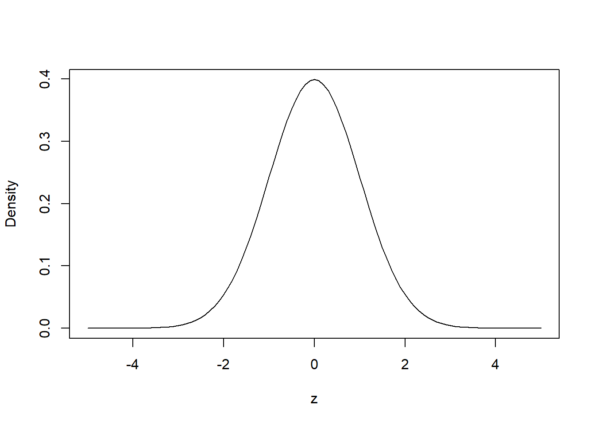
In the Fisherian approach, we used \(\alpha = 0.05\) as a threshold for determining significance. In the Neyman-Pearson approach, \(\alpha\) is used to define the critical region of a hypothesis test. As we recall from our definition of the normal distribution, 95% of observations are expected to occur within 2 standard deviations of the mean OR that only 5% of observations are expected to occur outside of 2 standard deviations of the mean. For a normally distributed variable (such as \(z\)), the critical regions defined by \(\alpha = 0.05\) correspond to the two tails of the distribution outside of two standard deviations of the mean. Technically, for a \(z\)-distribution, 95% of expected observations fall between -1.96 and 1.96 (not -2 and 2, as seems intuitive), which we can visualize like so:
x<- seq(-5,5,by=.01)
y<- dnorm(x,mean = 0, sd = 1)
plot(x,y,type="l",ylab="Density", xlab="z")
## we want all values of x and y where x is greater than 68
## The following three lines of code do this
poly_x <- c(1.96,x[x>=1.96])
index_val <- which(x == 1.96)
poly_y <- c(0,y[index_val:length(y)])
## we need the negative values too
neg_x <- c(x[x <= -1.96],-1.96)
neg_index <- which(x == -1.96)
neg_y <- c(y[1:neg_index],0)
## Then we plot it
polygon(poly_x,poly_y,col = "slateblue1")
polygon(neg_x,neg_y,col = "slateblue1")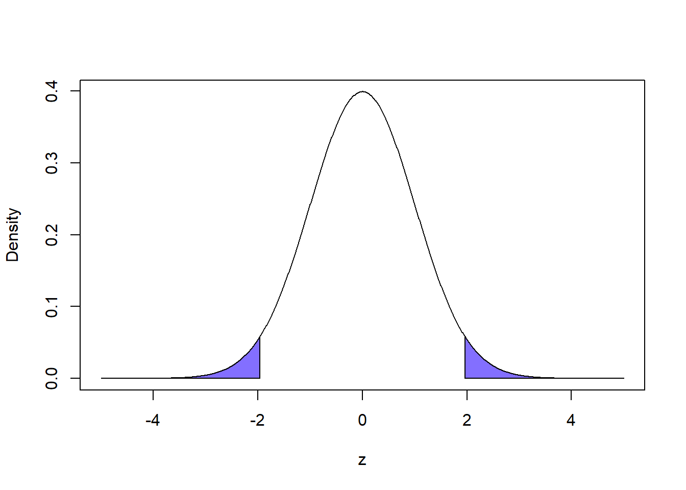
In the Neyman-Pearson approach, any calculated value of \(z\) that falls in the critical regions leads us to reject the null hypothesis and accept the alternate hypothesis. If \(z\) does not fall in the critical regions, then Neyman-Pearson indicates that you should accept the main/null hypothesis. What this means that, for a \(z\)-test, any value of \(z\) which falls between -1.96 and 1.96 is taken as in support of the main hypothesis. As such, the Neyman-Pearson null hypothesis is actually a little bit different than the Fisher null hypothesis.
The Fisher null hypothesis would be that \(H_0: z = 0\) and we calculate a \(p\)-value to determine how likely our data is under that assumption. Whereas, the Neyman-Pearson null hypothesis actually corresponds to \(H_0: z \in 0 \pm 1.96\). The \(\in\) symbol is just read as saying “is in,” so we can read that as “\(z\) is within the range of 0 plus or minus 1.96.” In the case of a \(z\)-test, 1.96 represents the minimum detectable effect size. For all values of \(z\) within this range (-1.96, 1.96) we will accept the main hypothesis. For all values of \(z\) outside of this range, we will reject the main hypothesis. We are using the same \(p\)-value criterion as Fisher to make our decision, but now instead of reflecting on the probability of the data, we are making a binary decision.
What this then means is that the alternate hypothesis under Neyman-Pearson is that \(H_A: z \notin 0 \pm 1.96\). If we reject the main hypothesis and accept the alternative, what we are saying is that we think that our signal \(z\) is actually described by a different distribution, specifically, a normal distribution whose mean is not centered around 0. There are actually an infinite number of potential alternative hypothesis distributions that could be observed (i.e., because there are an infinite number of continuous values which could be the mean). Here, we visualize some of the possible alternative distributions.
x<- seq(-5,5,by=.01)
y<- dnorm(x,mean = 0, sd = 1)
y_neg1<- dnorm(x,mean = -1, sd = 1)
y_neg2<- dnorm(x,mean = -2, sd = 1)
y1<- dnorm(x,mean = 1, sd = 1)
y2<- dnorm(x,mean = 2, sd = 1)
y3<- dnorm(x,mean = 3, sd = 1)
plot(x,y,type="l",ylab="Density", xlab = "z")
lines(x, y_neg2, col = "red")
#lines(x, y_neg1, col = "red")
lines(x, y1, col = "green")
#lines(x, y2, col = "green")
lines(x, y3, col = "slateblue1")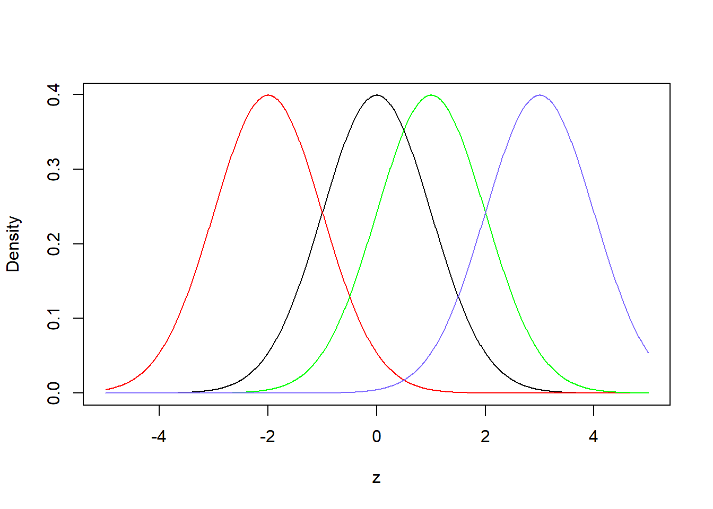
This might be a bit overwhelming to look at, but that’s because there is literally an infinite number of potential alternative distributions. Let’s look at the green distribution only real quick:
plot(x,y,type="l",ylab="Density", xlab = "z")
#lines(x, y_neg2, col = "red")
#lines(x, y_neg1, col = "red")
lines(x, y1, col = "green")
## we want all values of x and y where x is greater than 68
## The following three lines of code do this
poly_x <- c(1.96,x[x>=1.96])
index_val <- which(x == 1.96)
poly_y <- c(0,y[index_val:length(y)])
## we need the negative values too
neg_x <- c(x[x <= -1.96],-1.96)
neg_index <- which(x == -1.96)
neg_y <- c(y[1:neg_index],0)
## Then we plot it
polygon(poly_x,poly_y,col = "slateblue1")
polygon(neg_x,neg_y,col = "slateblue1")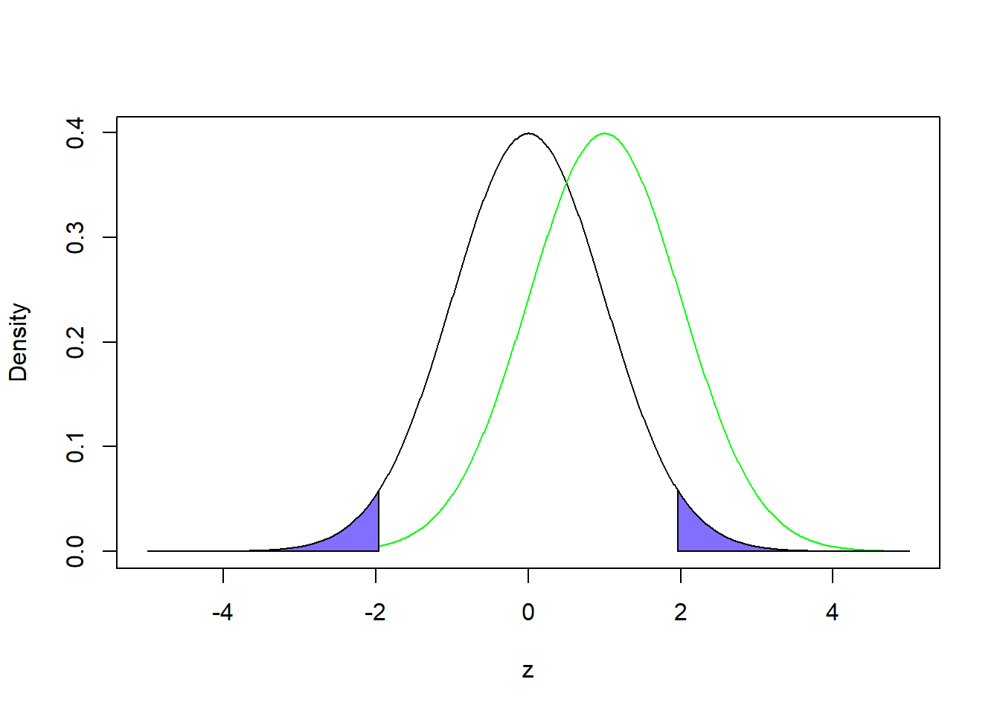
The green distribution represents an alternative to the null distribution. The green distribution indicates that the true standardized difference between the small town babies and the average baby is \(z = 1\) (or \(H_A: z \in 1 \pm 1.96\). Just like with the standard distribution, we assume that if we calculated \(z\) for a sample, that the probable values of \(z\) would be normally distributed around 1. Here is the thing though, the probable values of this alternative overlap with a lot of the probable values of our null distribution. If the true alternate is an effect size of \(z = 1\), then we simply don’t have a lot of power to actually identify it. Power refers to our ability to reject the null/main hypothesis when it should be rejected. In the case above, we will only reject the null hypothesis if \(z\) falls outside the -1.96 through 1.96 range. Which means that if the true signal is \(z = 1\), then we have little power to identify it. We can actually calculate the probability of correctly rejecting the null hypothesis when the alternate hypothesis is \(H_A: z \in 1 \pm 1.96\) by taking the area of the alternate curve within the critical regions, like so:
plot(x,y,type="l",ylab="Density", xlab = "z")
#lines(x, y_neg2, col = "red")
#lines(x, y_neg1, col = "red")
lines(x, y1, col = "green")
## we want all values of x and y where x is greater than 68
## The following three lines of code do this
poly_x <- c(1.96,x[x>=1.96])
index_val <- which(x == 1.96)
poly_y <- c(0,y1[index_val:length(y1)])
## we need the negative values too
#neg_x <- c(x[x <= -1.96],-1.96)
#neg_index <- which(x == -1.96)
#neg_y <- c(y1[1:neg_index],0)
## Then we plot it
polygon(poly_x,poly_y,col = "green")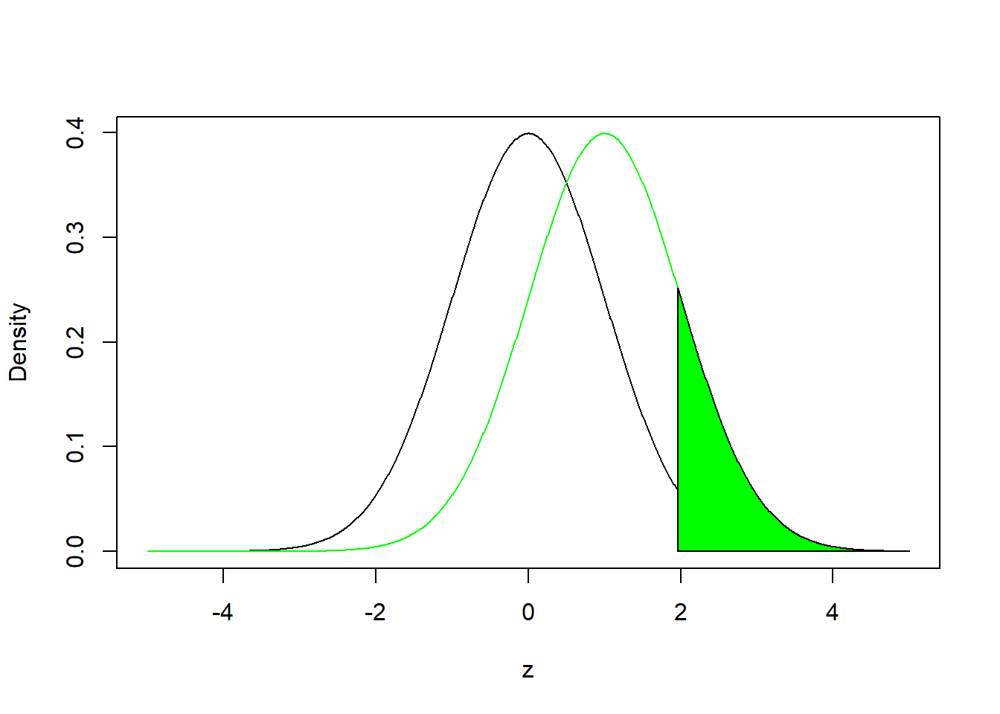
#polygon(neg_x,neg_y,col = "green")
round(MESS::auc(poly_x,poly_y),3)## Warning in regularize.values(x, y, ties, missing(ties)): collapsing to unique
## 'x' values## [1] 0.168What this tells us is that, if the real effect is \(z = 1\), that we will only correctly reject the null 16.8% of the time - or that our power = 0.168. That is really not good at all! It can be useful to plot this a different way, like so:
plot(x,y,type="l",ylab="Density", xlab = "z")
#lines(x, y_neg2, col = "red")
#lines(x, y_neg1, col = "red")
lines(x, y1, col = "green")
## we want all values of x and y where x is greater than 68
## The following three lines of code do this
poly_x <- c(1.96,x[x>=1.96])
index_val <- which(x == 1.96)
poly_y <- c(0,y[index_val:length(y)])
## we need the negative values too
neg_x <- c(x[x <= -1.96],-1.96)
neg_index <- which(x == -1.96)
neg_y <- c(y[1:neg_index],0)
## beta x
beta_x <- c(-1.96, x[x >= -1.96 & x <= 1.96], 1.96)
beta_y <- c(0,y1[neg_index:index_val],0)
## Then we plot it
polygon(poly_x,poly_y,col = "slateblue1")
polygon(neg_x,neg_y,col = "slateblue1")
polygon(beta_x,beta_y,col = "green")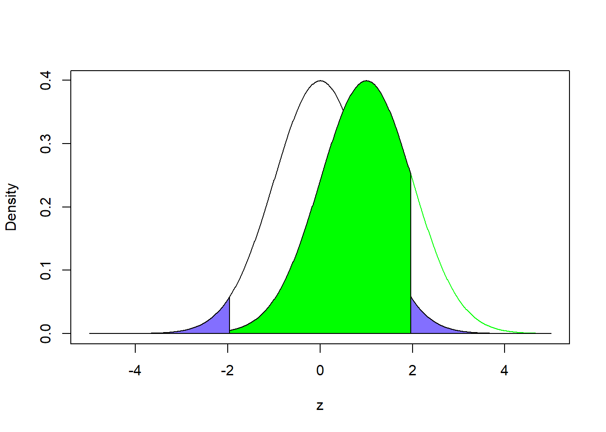
This shaded green region represents the values of \(z\), assuming this is real distribution of the signal, represents the probability that we wrongly accept the null/main hypothesis. We refer to this region as \(\beta\). Since the area under a curve equals 1, we can see that \(\beta = 1 - power\). In this case, \(\beta = 1 - .168 = .832\). Now, since there are infinitely many possible alternative hypotheses, Neyman and Pearson needed a way to establish what a detectable alternative hypothesis is. One way is to make \(\alpha\) less restrictive. So, instead of \(\alpha = 0.05\), we could set \(\alpha = 0.1\). This would result in the following adjustment to our previous plot:
plot(x,y,type="l",ylab="Density", xlab = "z")
#lines(x, y_neg2, col = "red")
#lines(x, y_neg1, col = "red")
lines(x, y1, col = "green")
## we want all values of x and y where x is greater than 68
## The following three lines of code do this
poly_x <- c(1.65,x[x>=1.65])
index_val <- which(x == 1) + 65
poly_y <- c(0,y[index_val:length(y)])
## we need the negative values too
neg_x <- c(x[x <= -1.65],-1.65)
neg_index <- which(x == -1.65)
neg_y <- c(y[1:neg_index],0)
## beta x
beta_x <- c(-1.65, x[x >= -1.65 & x <= 1.65], 1.65)
beta_y <- c(0,y1[neg_index:(index_val-1)],0)
## Then we plot it
polygon(poly_x,poly_y,col = "slateblue1")
polygon(neg_x,neg_y,col = "slateblue1")
polygon(beta_x,beta_y,col = "green")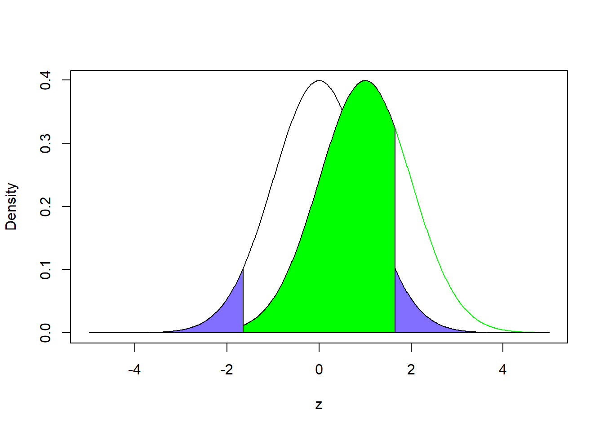
As we can see, adjusting \(\alpha\) caused the region of \(\beta\) to change as well. That is because \(\alpha\) and \(\beta\) are intertwined - if you increase \(\alpha\), then \(\beta\) will decrease and vice versa. BUT, this approach is not ideal. If you increase \(\alpha\) then you are essentially making it more probable you will reject your null hypothesis. We set \(\alpha\) to a low value of 0.05 so that we can be confident in our rejection. The higher \(\alpha\) becomes, the riskier our rejections of the null hypothesis become (i.e., our chances of wrongly rejecting the null are now higher).
So, Neyman-Pearson came up with a different idea. The issue is that their approach is not ideal for identifying relatively small signals. But, if we know the size of the signal we are looking for, then we can design our study to have enough power to identify that signal. So, Neyman-Pearson suggest defining an explicit alternate hypothesis in which the power to detect it is at least 80%, which is the equivalent to \(\beta = 0.2\). In the case, of our example, this would mean shifting the alternate hypothesis further to the right so that the shaded green region has an area of 0.2. This would correspond with a \(z\)-value of approximately 2.2, which we can depict like so:
plot(x,y,type="l",ylab="Density", xlab = "z")
#lines(x, y_neg2, col = "red")
#lines(x, y_neg1, col = "red")
y1 <- dnorm(x, mean = 2.8, sd = 1)
lines(x, y1, col = "green")
## we want all values of x and y where x is greater than 68
## The following three lines of code do this
poly_x <- c(1.96,x[x>=1.96])
index_val <- which(x == 1.96)
poly_y <- c(0,y[index_val:length(y)])
## we need the negative values too
neg_x <- c(x[x <= -1.96],-1.96)
neg_index <- which(x == -1.96)
neg_y <- c(y[1:neg_index],0)
## beta x
beta_x <- c(-1.96, x[x >= -1.96 & x <= 1.96], 1.96)
beta_y <- c(0,y1[neg_index:index_val],0)
## Then we plot it
polygon(poly_x,poly_y,col = "slateblue1")
polygon(neg_x,neg_y,col = "slateblue1")
polygon(beta_x,beta_y,col = "green")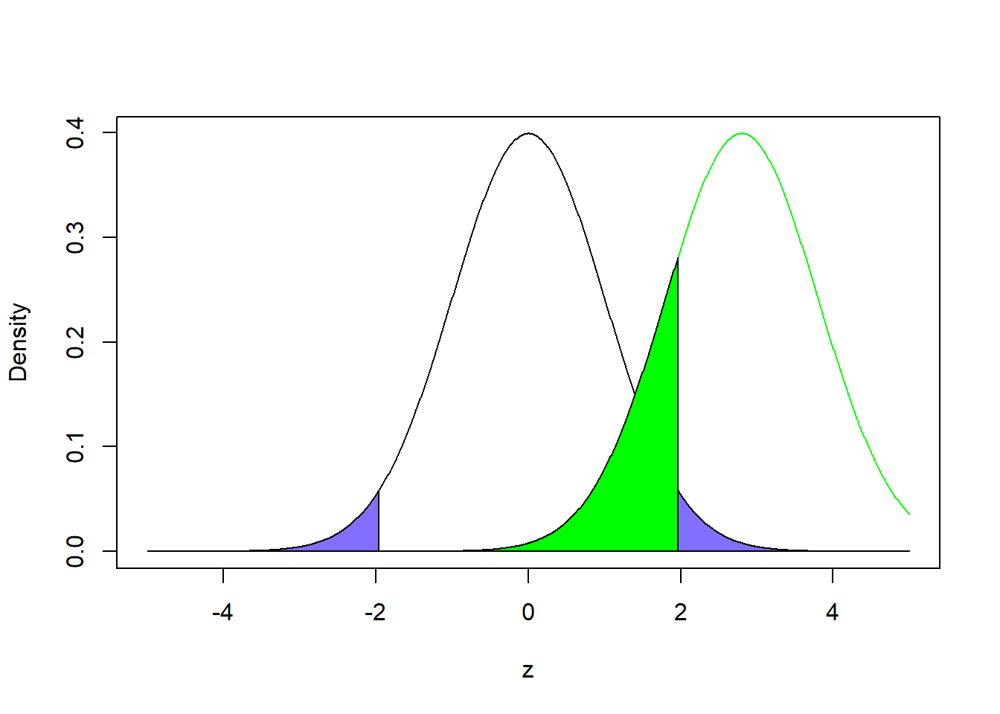
round(MESS::auc(beta_x, beta_y),3)## Warning in regularize.values(x, y, ties, missing(ties)): collapsing to unique
## 'x' values## [1] 0.2So, in this case Neyman and Pearson would describe \(z = 2.2\) as the expected effect size. The logic is that if the true effect size (i.e., the alternate hypothesis) is that \(z = 2.2\), using their approach, they will correctly reject the null/main and accept the alternate hypothesis 80% of the time! If the true value of \(z\) is greater than 2.2, then this power will increase. What this means is, if the true signal you are trying to observe is closer to 0 than 2.2, you will have limited power to reject the null. For practical purposes, this would indicate that there isn’t strong justification to use the test because the goal is to correctly pick the null/main or the alternate. If you can’t successfully pick the alternate, then there is no point.
We discussed before that you can improve power by increasing \(\alpha\). This is not ideal because it makes our rejections less conservative. We only want to reject the null hypothesis if we feel really confident we should. The other way to improve power is to sample more people for the study. We can see that if we look at the formula for calculating \(z\) that it is built right in - the greater our sample size \(n\), the greater the magnitude of \(z\), and thus the greater power we have:
\[z = \frac{\bar{x} - \mu}{\frac{\sigma}{\sqrt{n}}}\]
\(n\) represents the number of people in our study. As \(n\) gets bigger, so does \(z\)! This may be confusing because we have a fraction nested inside a fraction. So, if \(n\) is bigger than the value of \(\frac{\sigma}{\sqrt{n}}\) will get smaller. The bigger a denominator, the smaller the value becomes. So if the denominator of the whole fraction gets smaller, than the magnitude of \(z\) will go up! As we sample more people, the value of \(z\) will shift further and further away from 0! That means that \(\beta\) will decrease and, by definition, the power of our study will increase.
Power analyses are used to determine what size of \(n\) needs to be recruited so that we can detect a given expected effect size with a power of at least 0.8. The power analysis for a given method is dependent on how the test statistic is calculated. In the case of \(z\), we want to know how many people we need so that \(z = 2.2\), which we established above is associated with a power of 0.8 for a \(z\)-test. If we expect that babies in the small town have a mean weight \(\bar{x} = 8.1\) pounds (our expected effect size is that babies in this small town are 0.6 pounds heavier at birth then the average baby, i.e., 8.1 - 7.5 = 0.6), recalling that the standard deviation of birth weight was \(\sigma = 1.2\) and we want to calculate \(n\) for \(z = 2.2\), then we can do the following:
\[z = 2.2 = \frac{8.1 - 7.5}{\frac{1.2}{\sqrt{n}}}\]
We can scramble the values around to find that:
\[\sqrt{n} = \frac{1.2*2.2}{8.1 - 7.5} = \frac{2.64}{0.6} = 4.4\]
Since this is the square root, we square 4.4 to get \(4.4^2 = 19.36\). We always round up in power analyses because we cannot recruit 19.36 persons - this tells us if we expect that babies in this small town have a birth weight of 8.1 pounds, we need to recruit at least 20 babies to have adequate power to identify that this is true!
5.6.2 The Neyman-Pearson Decision Matrix
What is immediately clear is that Neyman-Pearson’s emphasis on making a decision has introduced a different type of complication to our idea of statistical inference. Fisher was not concerned with deciding if the null hypothesis was true or false - these statistical tests provide information on the probability of observations and it is the researchers job to contextualize the findings within the broader discourse of the research question. There is not a risk of being wrong in Fisher’s approach. In Neyman-Pearson, you must decide between the null and an alternative hypothesis. Even though we use expected effect size to make sure our study has enough power, the alternate hypothesis in Neyman-Pearson is typically just the opposite of the null.
The Neyman-Pearson decision process is often depicted as a decision matrix, like so:
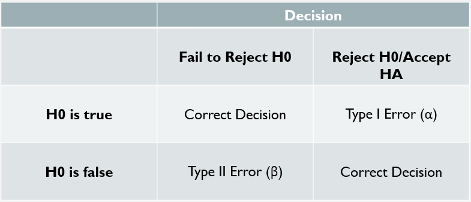
Ideally, we correctly choose between the main/null and the alternative hypotheses. This is always the goal of this approach. Two types of errors can occur: a Type 1 Error, in which the null hypothesis is rejected when it should have been accepted; and a Type 2 Error, in which the null hypothesis is accepted when it should have been rejected.
5.6.2.1 Type 1 Error, Alpha, and Long-Term Success
We can understand that the probability of making a Type 1 Error in the long run when the null is true is \(\alpha\). As displayed above, if our \(p\)-value is less than 0.05, we reject the null - even in cases when the null should not be rejected. Our \(p\)-value, as defined by Fisher, is the probability of observing our data assuming the null is true. Our critical regions which are defined by \(\alpha\) represent observed signal which, in total, have a 5% chance of occurring assuming the null hypothesis is true. That means, if we run 100 experiments with a true null hypothesis, we would expect to make a Type 1 Error 5 out of 100 (5%) times.
This concept is often misunderstood within the social sciences. Neyman and Pearson were concerned with identifying abnormalities in production. If a factory makes thousands of products, then their tests can be run over and over and over again. In other words, Neyman and Pearson were working in an environment where there was constant experimental replication. They were concerned with success in the long run. They wanted to make sure if they ran their test 1,000 times, that they maximized the number of times that they were correct.
However, in the endeavor to build scientific knowledge, we may be lucky to have the opportunity to replicate a study even one time, especially outside the context of randomized control trials. And, often, the replications undertaken are not true replications - they may have different sampling and measurement strategies that make them different. As a result, sometimes researchers use Neyman-Pearson’s idea of a \(p\)-value and \(\alpha\) to measure how likely it is that the null hypothesis is false…this unfortunately is not an appropriate way to interpret the \(p\)-value. When we explicitly accept the null hypothesis under Neyman-Pearson, we are thinking about our long-term success running and re-running (and re-running and re-running…) the same experiment. The misuse of the Neyman-Pearson decision matrix is often a result of researchers proclaiming that a single study can determine if the null or the alternate hypothesis is correct.
5.6.2.2 Type 2 Error, Beta, and Long-Term Success
Likewise, the probability of making a Type 2 Error in the long run when the null is false is \(\beta\). If our \(p\)-value is greater than \(\alpha\), then we accept the null - even if we should reject the null. While the true value of \(\beta\) is dependent on the true (and unknown) signal, we calculate \(\beta\) such that we can at least identify an expected effect size correctly 80% of the time or more. The idea here is that, if the null hypothesis is false and the alternative hypothesis is true and the true signal is at least the magnitude of the expected effect size, then if we run 100 experiments, we should correctly reject the null and accept the alternative 80% of the time (or more).
5.6.2.3 Thinking Long-Term
Under Neyman-Pearson’s framework, it appears that one of the best ways to identify if the null or the alternate hypothesis is true, is to replicate our study design many, many times. If the null is true, we would expect to reject the null only 5% of the time. If the null is false, we would expect to reject the null at least 80% of the time. If you only run one iteration of an experiment, you simply do not have enough information to identify if the null is true or not. Imagine flipping a coin one time, getting a heads, and declaring there is a 100% chance of flipping heads - that would be a poor conclusion! Unfortunately, many researchers will use the Neyman-Pearson decision approach for one study and then use that to declare that the null hypothesis is false. Repeating the study design and observing the decision multiple times is the best way to truly capture which hypothesis should be accepted.
5.7 Putting It All Together-ish: Null Hypothesis Significance Testing
Today, null hypothesis significance testing (NHST) is the primary framework used for statistical inference. NHST is often described as a mixture of the Fisher and Neyman-Pearson approaches, though it is not formally defined. To add to the potential confusion, for many statistical methods, applying Fisher and Neyman-Pearson lead to identical presentation of results. It is hard to explicitly define NHST because it isn’t a well-defined framework. It has arisen over several generations of statistical practice, as researchers have applied (and mis-applied) the approaches of Fisher and Neyman-Pearson.
Generally, on the surface, NHST looks very similar to Neyman-Pearson. A null and alternate hypothesis is specified. A statistical test is run. If the corresponding \(p\)-value is less than \(\alpha\) then the researcher declares their results significant and rejects the null hypothesis. Otherwise, if the \(p\)-value is greater than \(\alpha\), the result is deemed non-significant and the researcher opts to accept (or fail to reject) the null hypothesis. Often, “non-signfiicance” is misinterpreted as meaning that the result of a test has no value. As well, given concerns that a single study cannot be used as proof that the null is true, some researchers choose to “fail to reject” the null instead of accepting it based on non-significant results. However, in practice, most researchers tend to treat “acceptance” and “failure to reject” identically when it comes to answering their overall research question (i.e., they still treat the result as having no value in answering their scientific research question).
As such, NHST has become a rather mechanical exercise. Data is fed into a statistical test. The result is either significant or not. If the result is significant then the null can be rejected. It is very common for researchers to then answer their over-arching scientific research question by asserting that they found a significant result. For example, let’s say a study asked, “Is there a relationship between childhood drug use and educational attainment?” It would be fairly normal, under NHST practices, to read the following conclusion, “We found a significant relationship between childhood drug use and educational attainment,” without any reflection about the nature of this relationship. Significance, derived from the \(p\)-value, is a reflection of how likely our observed data is assuming the null hypothesis is true. Significance does not reflect on the likelihood of the null hypothesis nor does it reflect on the likelihood nor description of some alternative hypothesis. Therefore, it is not good statistical practice to use significance, alone, as an assertion that the null hypothesis is false or that some alternate hypothesis is true!
5.7.1 So, NHST Isn’t a Good Idea?
I realize I have introduced NHST in a pretty negative light. We have discussed the Fisher and Neyman-Pearson approaches because they both represent important frameworks for statistical inference. However, they are distinct and should be applied when it is appropriate to do so. The Fisherian approach is well-suited for research that is unlikely to be repeated (as is the case with most human subjects social science research). This is because Fisher’s approach does not attempt to decide whether the null hypothesis is true or false (as doing so with a single study is not well-founded), but instead focuses on how probable the null is given the observed data. Under Fisher’s approach, it is the researchers responsibility to take the results of statistical tests and their broad subject expertise to then answer their research question.
Neyman-Pearson were more interested in decision-making in contexts where the same statistical test could be executed over and over again, such as in manufacturing (where every product produced may be subject to some test). Their notion of acceptance and rejection of the null hypothesis is based on long-term probabilities. If they run a test 100 times, their goal is maximize the number of times the test is correct. This often implies that there exists a need to decide if something is true or false. In much of scientific inquiry, there is no imperative to decide if some hypothesis is true or not - in fact, it is generally considered unwise to declare that anything is true, as there is always more data that may lead us to rethink our decision. In many applied settings, making a decision is important: should a patient receive treatment A or treatment B; is a batch of our product normal or abnormal? Neyman-Pearson’s approach is more appropriate in settings where a decision must be made, whereas Fisher’s approach is often better suited for open-ended scientific inquiry.
I bring this up to say that it is your responsibility as a researcher to decide the best approach. Often, the statistical tests used under Fisher and Neyman-Pearson are the same. The primary difference is in the presentation of the results. Under Fisher, it is your responsibility to reflect on the probability of the data (the \(p\)-value) in your effort to answer your scientific research question. There is no impetus to accept or reject the null hypothesis, the \(p\)-value and other results of statistical tests simply represent evidence that can be used in litigating your research question. Under Neyman-Pearson, significance is used to make a decision based on the data observed. This is often not congruent with the goals of scientific inquiry. For example, under Neyman-Pearson we would treat a \(p\)-value of 0.049 as “significant” but a \(p\)-value of 0.051 as “not significant” even though we understand that they indicate almost the same exact probability of the sample data assuming the null is true! However, Neyman-Pearson also importantly introduced the concepts of power and effect size, which provides a way to reflect on what the alternative to the null may actually be!
5.7.2 Misuse of NHST
As I have alluded to, NHST is often poorly used. This is not intended to say that scientists are doing a bad job - instead, it is more a reflection of what kind of work is rewarded and how that has resulted in the proliferation of poor practices. The misapplication of NHST often is when researchers use NHST through the Neyman-Pearson framework when it is more appropriate to use Fisher’s. This occurs when researchers use a single study to declare a null hypothesis is false, when Neyman-Pearson fully intended their decision-making strategy to apply to long-run replications of the same test. This approach is far easier for both researchers and reviewers - the word “significant” becomes a signal that the research is important. As a result, researchers choose statistical tests with the goal of acheiving “significance” and reviewers and journals reward papers that find “significance.” Neyman-Pearson’s strategy is intuitive and conclusive - unfortunately, social science research rarely warrants conclusive declarations.
As a result, NHST is often taught as a hunt for significance. The Neyman-Pearson decision matrix is often taught, but the Fisherian approach is ignored. There is widespread misunderstanding of what a \(p\)-value is and, as a result, “significant” is often used as a word to justify the conclusion that the study has confirmed the authors scientific hypotheses. This is reinforced by the literature, where papers that approach significance testing in this way are rewarded and published. This indicates to other researchers and prospective researchers that this is best way to approach statistical inference.
As such, we have discussed both Fisherian and Neyman-Pearson approaches. We have done so so that we are empowered to apply the correct one - often, a mixture of the two is warranted, but we need to be clear about why we are interpreting our results the way that we are. The goal is always to answer our scientific research questions - the results of our statistical tests represent pieces of evidence in the effort to answer our scientific research question.
5.7.3 What Should I Do?
Which framework you apply will be dependent on the nature of your research question and your data. For every study, you will need to ask what the most appropriate framework to use is. Often, a mixture of both frameworks is warranted, but it is important to explicitly understand which parts of each are appropriate. If your research is focused on a decision-making process, then Neyman-Pearson should be applied in full. If your research is focused on building scientific knowledge, then the Fisherian approach makes sense.
Since this book is intended for human subjects social science researchers (such as epidemiologists), I will say that it is unlikely that Neyman-Pearson’s framework should be used alone. I generally recommend applying Fisher’s approach for interpreting \(p\)-values in relation to the null hypothesis, while also incorporating Neyman-Pearson’s idea of measuring effect sizes.
First, in studies aiming to build upon scientific knowledge, a single study should never be viewed as conclusive evidence of whether something is true or false. Fisher’s approach is well-suited for navigating the uncertainty of making conclusions, whereas the Neyman-Pearson approach often results in hard conclusions that are not fully supported by the data.
Second, while Fisher was not concered with an alternate hypothesis, the alternate hypothesis is usually what is most interesting to us! If we want to know the relationship between two variables, the null hypothesis that there is no relationship is usually not interesting to us at all! So, it is important that we have a way to capture the potential alternative hypothesis. The best way to do this is by capturing the effect size of the relationship between two variables, as Neyman-Pearson do. An effect size is the magnitude and direction of a relationship between two variables within the sample - this effect size can be understood to be a best estimate of the population-level effect size if the null hypothesis is false. Just about every test, regardless of approaching it from the Fisher or Neyman-Pearson framework, measures effect size. Fisher is just concerned with whether or not the observed signal (effect size) is probable under the null hypothesis, whereas Neyman-Pearson were interested in asking if the measured signal is evidence of an alternate hypothesis. As such, Neyman-Pearson also introduced the concept of confidence intervals, which represent a range of probable values that this actual population-level effect may fall within, which usually is centered around the measured effect size.
Now, these are my suggestions to you. You will likely encounter scientists who would not agree. You will likely encounter scientists who are not familiar with Fisher’s approach or Neyman-Pearson’s. You may submit a paper and have reviewers confused why you have approached statistical inference from the Fisherian approach when they are accustomed to the Neyman-Pearson. The important thing is that, no matter what, you feel comfortable justifying the decisions you have made.
5.8 In Conclusion
The goal of any study is to answer your scientific research question. Two frameworks - the Fisherian and the Neyman-Pearson - have been developed to guide statistical practices. For the social scientist, the Fisherian approach combined with Neyman-Pearson concepts of effect size and confidence intervals represent an important strategy for scientific inquiry. The Neyman-Pearson decision matrix is generally warranted where replication is undertaken and where the primary goal is to inform decision-making. The misapplication of Neyman-Pearson’s decision approach has lead to many poor practices within the social sciences. By understanding both Fisher and Neyman-Pearson approaches, we can choose which option is best based on the goals and design of our study!